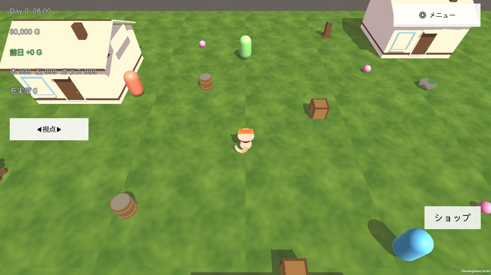
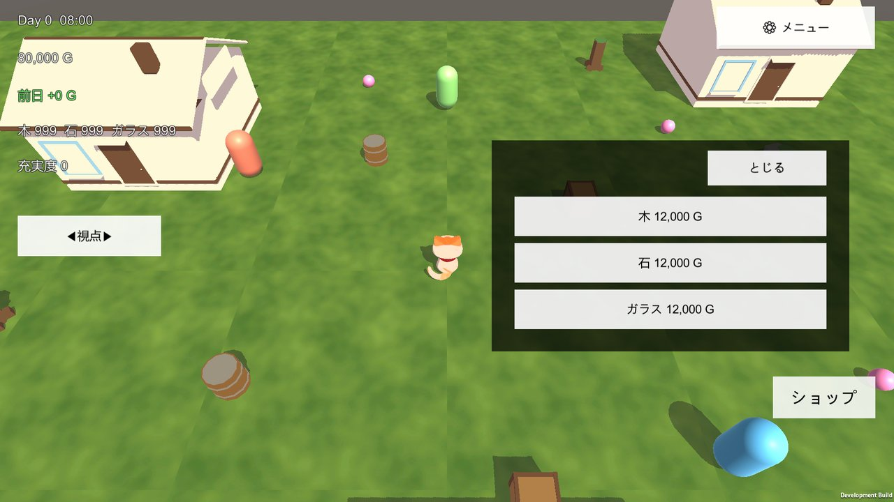
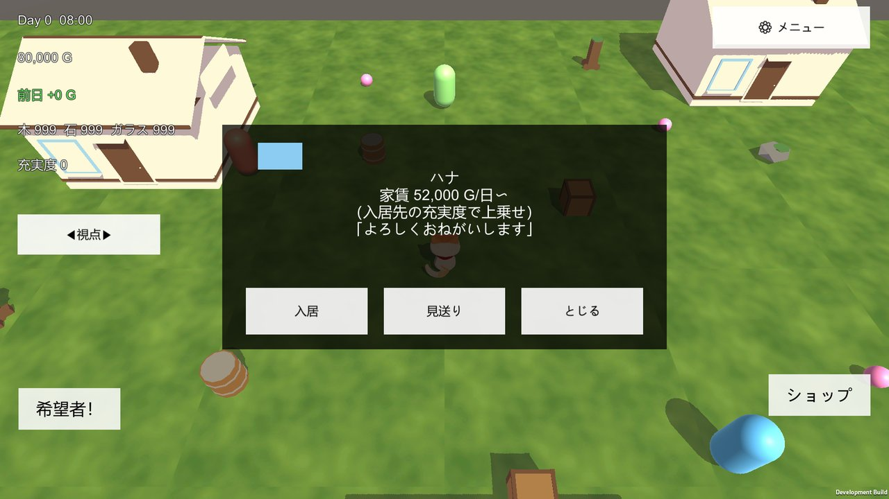

Mobile Game
ひだまりタウン
自分で建てた町が、勝手に生きて動き出す。採集・クラフト・建築で町を広げ、入居希望者を審査して住まわせる「大家」視点のスローライフゲームです。
概要
この種のスローライフゲームでは、プレイヤーは村へ引っ越してくる住人側であることがほとんどです。ひだまりタウンでは立場を逆にして、プレイヤーが町を用意して住人を迎え入れる「大家」を務めます。
素材を集め、部材を組み立てて家を建て、そこへ入居希望者を審査して住まわせる。集まった家賃で町をさらに広げていく、という一周がゲームの中心です。キャラクター・世界観・名称はすべてオリジナルで、内装の充実度が家賃の評価に反映されるなど、建てたものが経営に返ってくる作りにしています。
実装済みの主な要素
- 採集とクラフト、部材組み立て式の建築 — 木・石・ガラスなどを集め、部材を組み合わせて家を建てます。壁や屋根の見た目も選べます。
- 入居審査と家賃による経営 — 提示家賃とひとことコメントの付いた入居希望者カードから住人を選び、日ごとの収支として家賃を回収します。
- 素材ショップと整地 — 足りない素材の売買と、建てる場所をならす整地ができます。
- 室内の家具配置 — 家の中に入って家具を置けます。内装の充実度は家賃の評価に反映されます。
- スマホ操作に寄せたカメラ — タップで移動、ピンチでズーム、2本指で回転する固定俯瞰カメラです。
- ローカル保存 — セーブデータは端末内のファイルに保存します。オンライン機能はありません。
開発中のタイトルです。ここに挙げたのは現時点で動作している要素で、内容は今後変わる可能性があります。動作確認はiOSを先行して進めています。
画面
-

通常プレイ。日付・所持金・素材の状況が常に見える -

素材ショップ。足りない部材はここで買える -

入居審査。見た目・提示家賃・ひとことを見て選ぶ
画面は開発中のビルドを撮影したものです（画面右下の表示は開発用ビルドの目印です）。実際の表示は変更される場合があります。